Summary
- Description
- Getting ready
- Loading example data
- Using predict()
- Visualizing predictions in environmental space
- Visualizing predictions in geographic space
- Three-dimensional example
- Save and import
Description
This vignette demonstrates how to use the predict()
method for nicheR_ellipsoid objects to generate Mahalanobis
distance and suitability predictions. The predict()
function is the core tool for translating the estimated ellipsoidal
niche built with build_ellipsoid() into quantitative
estimates of environmental suitability, both in environmental space
(E-space) and geographic space (G-space).
The main function covered in this vignette is:
-
predict(): generates Mahalanobis distance, suitability, and truncated versions of these metrics from anicheR_ellipsoidobject. It accepts environmental data as adata.frameor aSpatRaster.
Understanding how predictions are computed and what each output represents is essential for interpreting virtual niches responsibly. This vignette covers the statistical theory behind the predictions, a detailed breakdown of all function arguments and output types, and visualizations of every output in both E-space and G-space.
Getting ready
If nicheR has not been installed yet, please do so. See
the Main guide for installation
instructions.
Use the following lines of code to load nicheR and other
packages needed for this vignette, and to set a working directory (if
necessary).
Note: We will display functions from other packages as
package::function().
# Load packages
library(nicheR)
#library(terra)
# Current directory
getwd()
# Define new directory
#setwd("YOUR/DIRECTORY") # modify if setting a new directoryLoading example data
The example data included in nicheR consists of a
nicheR_ellipsoid object representing the niche of a
reference species defined by two environmental variables (bio1: Mean
Annual Temperature and bio12: Annual Precipitation), background
environmental data for North America, and a raster stack of the same
variables for geographic projections.
# Reference niche (nicheR_ellipsoid object)
data("ref_ellipse", package = "nicheR")
# Background environmental data (data.frame)
data("back_data", package = "nicheR")
# Raster layers for geographic predictions (SpatRaster)
ma_bios <- terra::rast(system.file("extdata", "ma_bios.tif",
package = "nicheR"))Let’s inspect each object to understand its structure before proceeding.
# Check reference niche
ref_ellipse
#> nicheR Ellipsoid Object
#> -----------------------
#> Dimensions: 2D
#> Chi-square cutoff: 9.21
#> Centroid (mu): 23.5, 1750
#>
#> Covariance matrix:
#> bio_1 bio_12
#> bio_1 1.361 -100
#> bio_12 -100.000 62500
#>
#> Ellipsoid semi-axis lengths:
#> 758.715, 3.326
#>
#> Ellipsoid axis endpoints:
#> Axis 1:
#> bio_1 bio_12
#> vertex_a 24.714 991.286
#> vertex_b 22.286 2508.714
#>
#> Axis 2:
#> bio_1 bio_12
#> vertex_a 26.826 1750.005
#> vertex_b 20.174 1749.995
#>
#> Ellipsoid volume: 7927.882
# Check background data
head(back_data)
#> x y bio_1 bio_5 bio_6 bio_7 bio_12 bio_13 bio_14
#> 1 -99.91667 29.91667 18.16097 33.23550 0.86900 32.36650 680 84 26
#> 2 -99.75000 29.91667 18.06556 33.32575 0.65550 32.67025 703 87 28
#> 3 -99.58333 29.91667 17.95946 33.33925 0.44600 32.89325 725 92 31
#> 4 -99.41667 29.91667 18.01018 33.34200 0.62200 32.72000 734 95 33
#> 5 -99.25000 29.91667 18.14458 33.40400 0.99125 32.41275 748 97 34
#> 6 -99.08333 29.91667 18.36623 33.76550 1.02025 32.74525 771 101 36
#> bio_15
#> 1 39.75968
#> 2 38.44158
#> 3 37.43598
#> 4 36.24147
#> 5 34.95365
#> 6 33.73626
# Check the raster layers
ma_bios
#> class : SpatRaster
#> size : 150, 240, 8 (nrow, ncol, nlyr)
#> resolution : 0.1666667, 0.1666667 (x, y)
#> extent : -100, -60, 5, 30 (xmin, xmax, ymin, ymax)
#> coord. ref. : lon/lat WGS 84 (EPSG:4326)
#> source : ma_bios.tif
#> names : bio_1, bio_5, bio_6, bio_7, bio_12, bio_13, ...
#> min values : 3.91325, 8.4285, -0.39, 5.90000, 291, 65, ...
#> max values : 29.39055, 37.8985, 24.70, 32.89325, 7150, 767, ...This represents a two-dimensional nicheR_ellipsoid
object built from bio_1 and bio_12. For
details on how ellipsoids are constructed, see the build_ellipsoid() vignette.
The most important things to carry forward are that we are working in
two dimensions and that the variable names stored in
ref_ellipse$var_names must be present in any
newdata passed to predict().
Using predict()
At its most basic, predict() requires two things: the
nicheR_ellipsoid object produced by
build_ellipsoid(), and newdata, the
environmental data over which predictions will be made. The
newdata must contain columns matching the variable names
used to build the ellipsoid. Only those variables are used, so
subsetting to ref_ellipse$var_names is good practice,
though the function will handle extra columns automatically.
Basic predictions to a data frame
When newdata is a data.frame,
predict() returns a data.frame with class
"nicheR_prediction". By default it includes the predictor
columns followed by two prediction columns: Mahalanobis and
suitability.
pred_df <- predict(ref_ellipse,
newdata = back_data[, ref_ellipse$var_names])
#> Starting: suitability prediction using newdata of class: data.frame...
#> Step: Using 2 predictor variables: bio_1, bio_12
#> Done: Prediction completed successfully. Returned columns: bio_1, bio_12, Mahalanobis, suitability
class(pred_df)
#> [1] "nicheR_prediction" "data.frame"
colnames(pred_df)
#> [1] "bio_1" "bio_12" "Mahalanobis" "suitability"
head(pred_df)
#> bio_1 bio_12 Mahalanobis suitability
#> 1 18.16097 680 59.71094 1.081269e-13
#> 2 18.06556 703 59.62282 1.129974e-13
#> 3 17.95946 725 59.73708 1.067230e-13
#> 4 18.01018 734 58.66810 1.821314e-13
#> 5 18.14458 748 56.37870 5.721652e-13
#> 6 18.36623 771 52.71068 3.581139e-12Basic predictions to a SpatRaster
When newdata is a SpatRaster,
predict() returns a SpatRaster where each
requested output is a named layer. The coordinate reference system,
extent, and resolution always match those of newdata. Cells
with NA in any predictor layer receive NA in
all prediction layers.
pred_rast <- predict(ref_ellipse,
newdata = ma_bios[[ref_ellipse$var_names]])
#> Starting: suitability prediction using newdata of class: SpatRaster...
#> Step: Using 2 predictor variables: bio_1, bio_12
#> Done: Prediction completed successfully. Returned raster layers: Mahalanobis, suitability
pred_rast
#> class : SpatRaster
#> size : 150, 240, 2 (nrow, ncol, nlyr)
#> resolution : 0.1666667, 0.1666667 (x, y)
#> extent : -100, -60, 5, 30 (xmin, xmax, ymin, ymax)
#> coord. ref. : lon/lat WGS 84 (EPSG:4326)
#> source(s) : memory
#> names : Mahalanobis, suitability
#> min values : 2.992248e-03, 7.035461e-127
#> max values : 5.809547e+02, 9.985050e-01
names(pred_rast)
#> [1] "Mahalanobis" "suitability"Understanding the output
Looking at both outputs above, the default call always returns a Mahalanobis distance and a suitability, regardless of whether the input is a data frame or a raster. These two quantities are mathematically connected, and understanding that connection is essential for interpreting what the model is telling you.
Mahalanobis distance and the ellipsoid
The ellipsoidal niche model in nicheR represents a
species’ niche as a region in multivariate environmental space. The
ellipsoid’s shape comes from the covariance structure of the
environmental conditions the user provides, and its center, the
centroid, is the most favorable environmental
combination.
Every prediction starts with the Mahalanobis distance (), which measures how far any environmental point is from the niche centroid :
where is the inverse of the covariance matrix. In simpler terms, measures how unusual a set of environmental conditions is relative to the niche center, accounting for differences in variable scale and for correlations among variables. Unlike Euclidean distance, it stretches and rotates with the shape of the niche. The ellipsoid surface in E-space is exactly the set of all points at a constant Mahalanobis distance from the centroid.
A smaller means environmental conditions are similar to those at the niche center. A larger means they are increasingly different. Critically, is not bounded between 0 and 1: it is a distance, not a probability.
From distance to suitability: the chi-square and MVN connection
nicheR converts
to suitability using the multivariate normal (MVN)
kernel:
This transformation is not arbitrary. The exponent in the MVN probability density function is exactly , so suitability is proportional to the MVN density at . In other words, we are treating the niche as a multivariate Gaussian centered at with covariance , and suitability is the relative likelihood of a species occurring under the conditions at . This rescales the distance into a value between 0 and 1 that is more intuitive ecologically: 1 at the centroid, declining smoothly toward 0 as conditions move away from the optimum.
This connection to the MVN also determines the ellipsoid boundary.
Under the MVN assumption,
follows a chi-square distribution with
degrees of freedom, where
is the number of environmental variables. The confidence level
cl stored in the ellipsoid corresponds to a
quantile: the ellipsoid surface is the set of points where
,
enclosing a fraction cl of the MVN probability mass.
Setting cl = 0.95 means the ellipsoid contains 95% of the
theoretical MVN density.
The figure below brings these ideas together. The top row shows the E-space scatter colored by and the histogram of values across the background. The bottom row shows the same for suitability. The vertical dashed lines in the histograms mark chi-square quantiles at three probability levels, showing exactly where the ellipsoid boundary falls relative to the distribution of background distances.
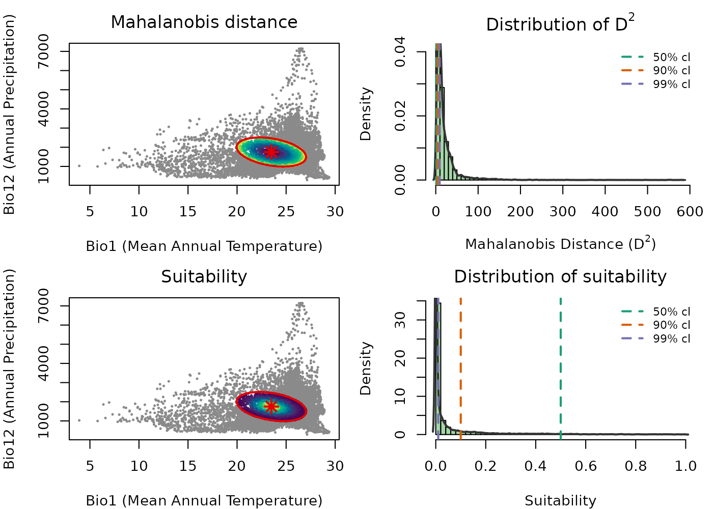
The color gradients in the scatter plots are reversed between the two metrics, reflecting their mathematical relationship: increases as you move away from the centroid, so darker colors near the center indicate lower distance. Suitability decreases with distance, so brighter colors near the center indicate higher suitability. Distance measures how far a point is from the niche center; suitability transforms that distance into an ecologically interpretable value between 0 and 1.
The histograms connect this to the MVN. Under the MVN assumption,
follows a chi-square distribution, and the vertical dashed lines mark
chi-square quantiles at 50%, 90%, and 99%, which correspond to ellipsoid
boundaries at those confidence levels. The same thresholds appear in the
suitability histogram, showing the equivalent suitability value at each
boundary. This makes it clear that the choice of cl when
building the ellipsoid has a direct and interpretable effect on what
suitability value marks the edge of the niche.
Additional function arguments
Beyond the basic call, predict() lets you control which
outputs are returned independently. The four output types are:
| Argument | Default | Description |
|---|---|---|
include_mahalanobis |
TRUE |
Squared Mahalanobis distance for every point. Not truncated. Ranges from 0 at the centroid to infinity. |
include_suitability |
TRUE |
Suitability . Not truncated. Ranges from near 0 to 1. |
mahalanobis_truncated |
FALSE |
with values outside the ellipsoid set to NA. |
suitability_truncated |
FALSE |
with values outside the ellipsoid set to 0. |
Two additional arguments control what is returned alongside predictions:
-
keep_data: whether predictor columns are included in the returned object. Default isTRUEfordata.frameinput andFALSEforSpatRaster. Coordinate columns (x,y,lon,lat, etc.) are always retained whenkeep_data = TRUE. -
adjust_truncation_level: a number strictly between 0 and 1 that overrides theclstored in the ellipsoid for truncated outputs, without refitting the ellipsoid. See Effect of the confidence level on predictions.
All four outputs at once
Any combination of the four flags can be set to TRUE in
a single call. All requested outputs are returned together.
pred_df_all <- predict(ref_ellipse,
newdata = back_data[, ref_ellipse$var_names],
include_mahalanobis = TRUE,
include_suitability = TRUE,
mahalanobis_truncated = TRUE,
suitability_truncated = TRUE)
#> Starting: suitability prediction using newdata of class: data.frame...
#> Step: Using 2 predictor variables: bio_1, bio_12
#> Done: Prediction completed successfully. Returned columns: bio_1, bio_12, Mahalanobis, suitability, Mahalanobis_trunc, suitability_trunc
colnames(pred_df_all)
#> [1] "bio_1" "bio_12" "Mahalanobis"
#> [4] "suitability" "Mahalanobis_trunc" "suitability_trunc"To see what truncation does concretely, compare one row from outside the ellipsoid across all four columns. The non-truncated outputs always have a value; the truncated ones apply the boundary.
# A point outside the ellipsoid
outside_idx <- which(!is.na(pred_df_all$Mahalanobis) &
is.na(pred_df_all$Mahalanobis_trunc))[1]
pred_df_all[outside_idx, ]
#> bio_1 bio_12 Mahalanobis suitability Mahalanobis_trunc suitability_trunc
#> 1 18.16097 680 59.71094 1.081269e-13 NA 0The same applies to raster output:
pred_rast_all <- predict(ref_ellipse,
newdata = ma_bios[[ref_ellipse$var_names]],
include_mahalanobis = TRUE,
include_suitability = TRUE,
mahalanobis_truncated = TRUE,
suitability_truncated = TRUE)
#> Starting: suitability prediction using newdata of class: SpatRaster...
#> Step: Using 2 predictor variables: bio_1, bio_12
#> Done: Prediction completed successfully. Returned raster layers: Mahalanobis, suitability, Mahalanobis_trunc, suitability_trunc
pred_rast_all
#> class : SpatRaster
#> size : 150, 240, 4 (nrow, ncol, nlyr)
#> resolution : 0.1666667, 0.1666667 (x, y)
#> extent : -100, -60, 5, 30 (xmin, xmax, ymin, ymax)
#> coord. ref. : lon/lat WGS 84 (EPSG:4326)
#> source(s) : memory
#> names : Mahalanobis, suitability, Mahalanobis_trunc, suitability_trunc
#> min values : 2.992248e-03, 7.035461e-127, 0.002992248, 0.000000
#> max values : 5.809547e+02, 9.985050e-01, 9.206901663, 0.998505
names(pred_rast_all)
#> [1] "Mahalanobis" "suitability" "Mahalanobis_trunc"
#> [4] "suitability_trunc"The role of the confidence level and truncation
The ellipsoid boundary is defined by the chi-square cutoff
.
Without truncation,
and
are computed for every point in newdata regardless of
whether it falls inside or outside the ellipsoid, and every point on
Earth receives a positive suitability value. This can be misleading when
the goal is to identify where the species could potentially occur.
Truncation operationalizes the ellipsoid boundary ecologically:
-
mahalanobis_truncated = TRUE: points with receiveNA, meaning those environments are outside the niche and their distance is not reported. -
suitability_truncated = TRUE: points with receive , meaning unsuitable environments are explicitly scored as zero rather than receiving a small positive value.
The plots in Truncated predictions in E-space and Truncated suitability map below show truncated outputs. Outside points are rendered in grey so the full background extent is preserved in the view.
Effect of the confidence level on predictions
The choice of cl directly controls how much of the
environmental space is classified as suitable. A lower cl
produces a smaller, more conservative ellipsoid boundary; a higher
cl produces a larger, more permissive one. The ellipsoid
object itself remains unchanged, only the boundary used for truncation
shifts.
The adjust_truncation_level argument lets you explore
different thresholds without refitting the ellipsoid:
# More conservative: only the innermost 90% of the MVN distribution
pred_conservative <- predict(ref_ellipse,
newdata = back_data[, ref_ellipse$var_names],
suitability_truncated = TRUE,
adjust_truncation_level = 0.90)
# More permissive: the innermost 99%
pred_permissive <- predict(ref_ellipse,
newdata = back_data[, ref_ellipse$var_names],
suitability_truncated = TRUE,
adjust_truncation_level = 0.99)adjust_truncation_level must be a single number strictly
between 0 and 1 and only affects truncated outputs.
The figure below shows truncated suitability in E-space at three confidence levels side by side.
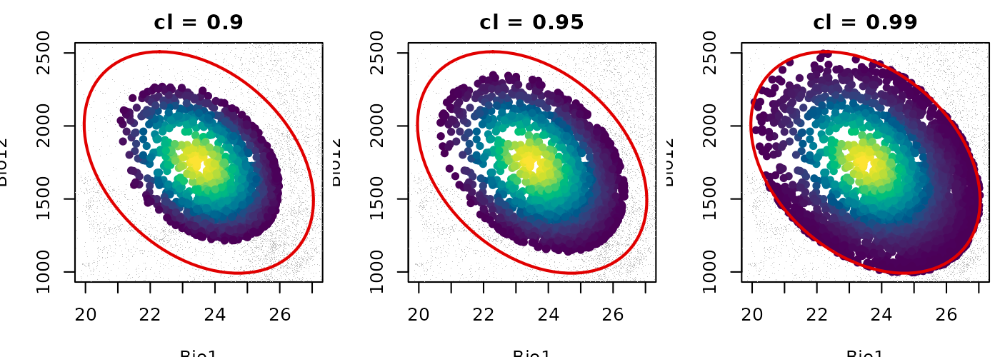
As cl increases from 0.90 to 0.99 the suitable area
grows larger while the ellipsoid object itself remains unchanged. The
colored interior represents the gradient of suitability within each
boundary and grey points are those classified as outside. The choice of
cl is a meaningful modeling decision that should be
justified in the context of the research question.
Visualizing predictions in environmental space
Visualizing predictions in E-space is the most direct way to understand what the model is saying about the niche. Each point represents an environmental combination and its color encodes the prediction value. The ellipsoid boundary is overlaid to show the niche limit.
Mahalanobis distance in E-space
maha_df <- predict(ref_ellipse,
newdata = back_data[, ref_ellipse$var_names],
include_mahalanobis = TRUE,
include_suitability = FALSE,
verbose = FALSE)
par(mar = mars)
plot_ellipsoid(ref_ellipse,
prediction = maha_df,
col_layer = "Mahalanobis",
col_ell = "#e10000",
lwd = 2, pch = 16, cex_bg = 0.5,
xlab = "Bio1 (Mean Annual Temperature)",
ylab = "Bio12 (Annual Precipitation)",
main = "Mahalanobis Distance (D\u00b2) in E-space")
add_data(as.data.frame(t(ref_ellipse$centroid)),
x = "bio_1", y = "bio_12",
pts_col = "#e10000", pch = 8, cex = 1.5, lwd = 2)
legend("topright",
legend = c("Ellipsoid boundary", "Centroid",
"Low D\u00b2", "High D\u00b2"),
col = c("#e10000", vir_pal[5], vir_pal[95]),
pch = c(NA, 8, 16, 16), lty = c(1, NA, NA, NA),
lwd = c(2, NA, NA, NA), cex = 0.75, bty = "n")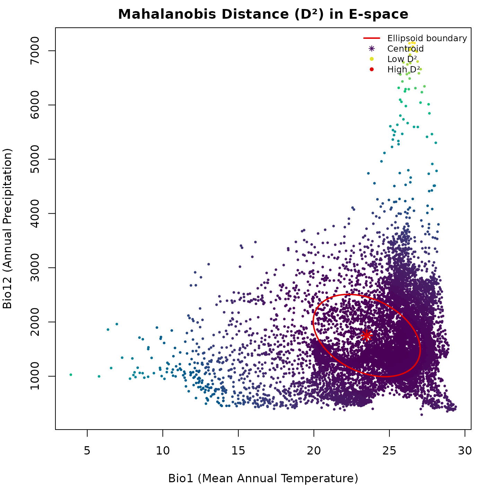
The gradient from dark to light radiates outward from the centroid. The distance continues to grow beyond the ellipsoid boundary without any discontinuity: the untruncated does not distinguish inside from outside.
Suitability in E-space
suit_df <- predict(ref_ellipse,
newdata = back_data[, ref_ellipse$var_names],
include_mahalanobis = FALSE,
include_suitability = TRUE,
verbose = FALSE)
par(mar = mars)
plot_ellipsoid(ref_ellipse,
prediction = suit_df,
col_layer = "suitability",
pal = vir_pal,
col_ell = "#e10000",
lwd = 2, pch = 16, cex_bg = 0.5,
xlab = "Bio1 (Mean Annual Temperature)",
ylab = "Bio12 (Annual Precipitation)",
main = "Suitability in E-space")
add_data(as.data.frame(t(ref_ellipse$centroid)),
x = "bio_1", y = "bio_12",
pts_col = "#e10000", pch = 8, cex = 1.5, lwd = 2)
legend("topright",
legend = c("Ellipsoid boundary", "Centroid",
"Low suitability", "High suitability"),
col = c("#e10000", "#e10000", vir_pal[5], vir_pal[95]),
pch = c(NA, 8, 16, 16), lty = c(1, NA, NA, NA),
lwd = c(2, NA, NA, NA), cex = 0.75, bty = "n")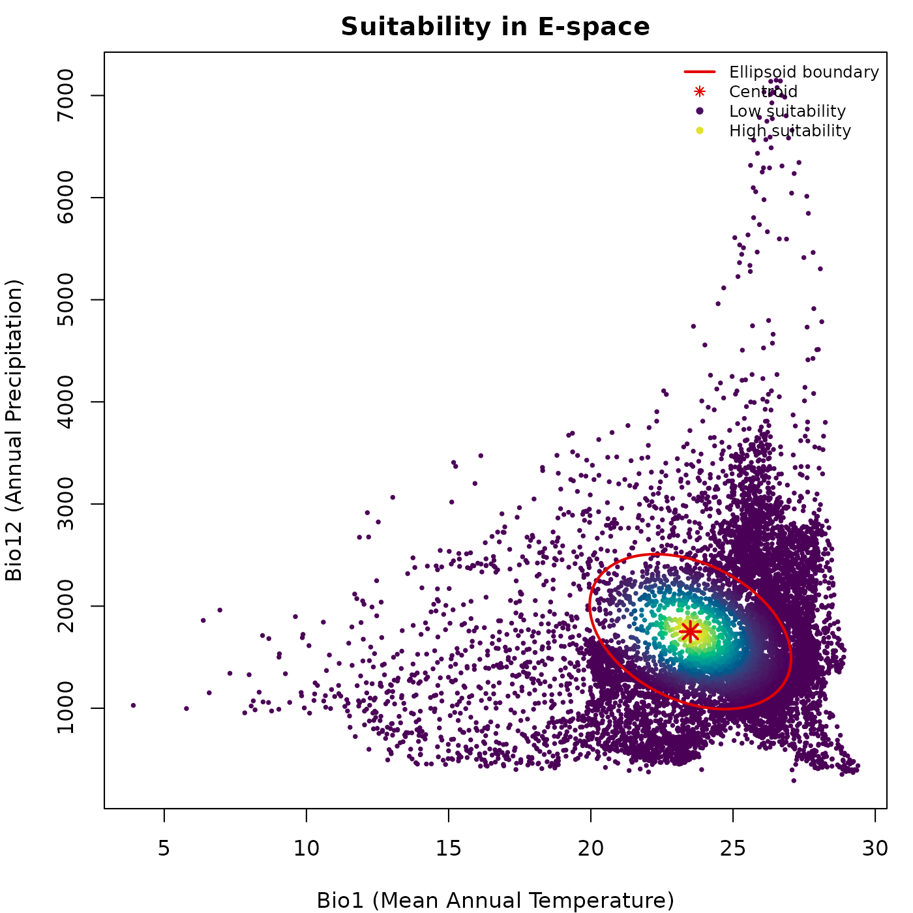
Suitability peaks at the centroid and declines outward. The brightest colors mark the core of the niche, where environmental conditions best match those used to construct the ellipsoid.
Truncated predictions in E-space
trunc_df <- predict(ref_ellipse,
newdata = back_data[, ref_ellipse$var_names],
include_mahalanobis = FALSE,
include_suitability = FALSE,
mahalanobis_truncated = TRUE,
suitability_truncated = TRUE,
verbose = FALSE)
par(mfrow = c(1, 2), cex = 0.7, mar = mars)
plot_ellipsoid(ref_ellipse,
prediction = trunc_df,
col_layer = "Mahalanobis_trunc",
col_bg = "#d4d4d4",
col_ell = "#e10000",
lwd = 2, pch = 16, cex_bg = 0.4,
xlab = "Bio1 (Mean Annual Temperature)",
ylab = "Bio12 (Annual Precipitation)",
main = "Mahalanobis Trunc. (D\u00b2)")
add_data(as.data.frame(t(ref_ellipse$centroid)),
x = "bio_1", y = "bio_12",
pts_col = "#e10000", pch = 8, cex = 1.2, lwd = 2)
legend("topright",
legend = c("Ellipsoid boundary", "Inside (low D\u00b2)",
"Inside (high D\u00b2)", "Outside (NA)"),
col = c("#e10000", vir_pal[5], vir_pal[95], "#d4d4d4"),
pch = c(NA, 16, 16, 16), lty = c(1, NA, NA, NA),
lwd = c(2, NA, NA, NA), cex = 0.65, bty = "n")
plot_ellipsoid(ref_ellipse,
prediction = trunc_df,
col_layer = "suitability_trunc",
col_bg = "#d4d4d4",
col_ell = "#e10000",
lwd = 2, pch = 16, cex_bg = 0.4,
xlab = "Bio1 (Mean Annual Temperature)",
ylab = "Bio12 (Annual Precipitation)",
main = "Suitability Trunc.")
add_data(as.data.frame(t(ref_ellipse$centroid)),
x = "bio_1", y = "bio_12",
pts_col = "#e10000", pch = 8, cex = 1.2, lwd = 2)
legend("topright",
legend = c("Ellipsoid boundary", "Low suitability",
"High suitability", "Outside (zero)"),
col = c("#e10000", vir_pal[5], vir_pal[95], "#d4d4d4"),
pch = c(NA, 16, 16, 16), lty = c(1, NA, NA, NA),
lwd = c(2, NA, NA, NA), cex = 0.65, bty = "n")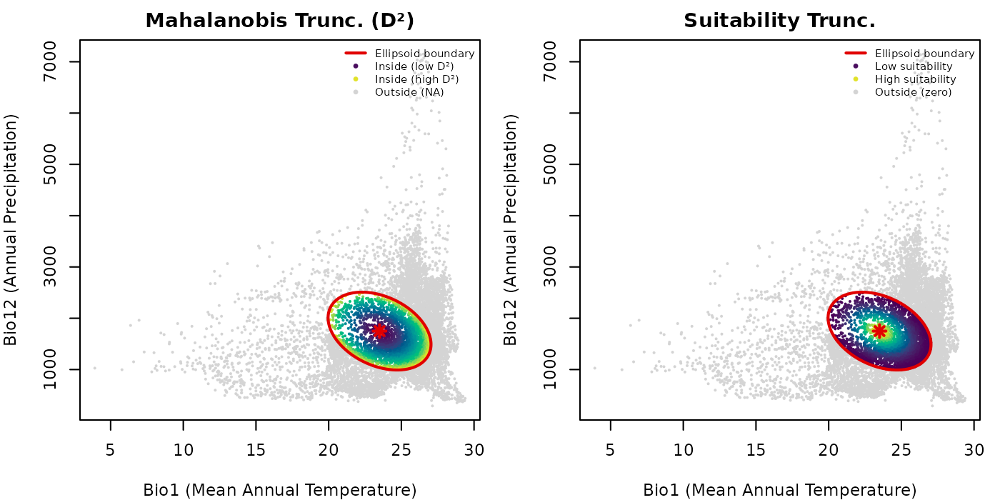
Truncation makes the ellipsoid boundary ecologically operative. Outside points are shown in grey so the full background extent is preserved in the plot, making it easy to see what fraction of the background falls inside versus outside the ellipsoid.
Binary suitable vs. unsuitable environments
The truncated suitability output provides a direct route to binary presence-absence predictions in E-space. Points with are suitable (inside the ellipsoid) and points with are unsuitable (outside).
par(mar = mars)
plot_ellipsoid(ref_ellipse,
prediction = trunc_df,
col_layer = "suitability_trunc",
pal = c("#d4d4d4", "#0004d5"),
col_bg = "#d4d4d4",
col_ell = "#e10000",
lwd = 2, pch = 16, cex_bg = 0.5,
xlab = "Bio1 (Mean Annual Temperature)",
ylab = "Bio12 (Annual Precipitation)",
main = "Binary Suitability in E-space")
legend("topright",
legend = c("Ellipsoid boundary", "Suitable (inside)",
"Unsuitable (outside)"),
col = c("#e10000", "#0004d5", "#d4d4d4"),
pch = c(NA, 16, 16), lty = c(1, NA, NA),
lwd = c(2, NA, NA), cex = 0.75, bty = "n")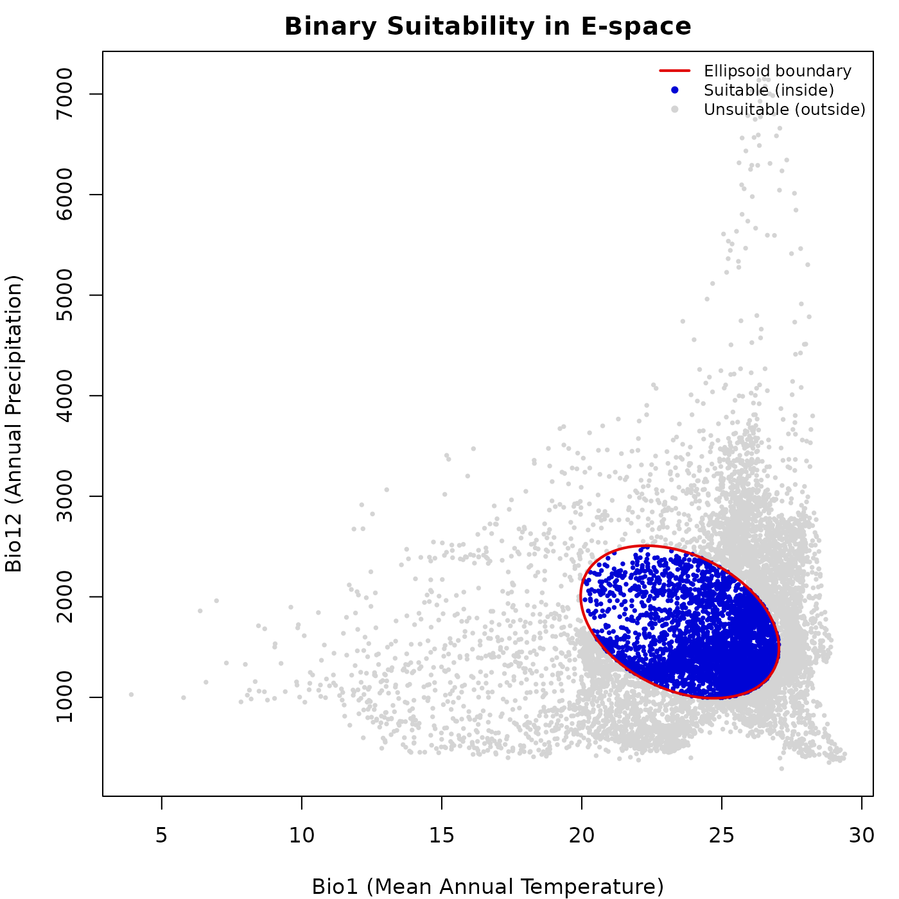
The blue region corresponds exactly to the interior of the ellipsoid in E-space. This binary representation is the starting point for deriving potential distribution maps and species richness estimates.
Visualizing predictions in geographic space
Projecting predictions to G-space using a SpatRaster
translates niche model outputs into maps of potential distribution. Each
cell represents a geographic location evaluated against the niche model
using the environmental values of its corresponding layers.
Mahalanobis distance map
maha_rast <- predict(ref_ellipse,
newdata = ma_bios[[ref_ellipse$var_names]],
include_mahalanobis = TRUE,
include_suitability = FALSE,
verbose = FALSE)
par(mar = marsr)
terra::plot(maha_rast$Mahalanobis,
axes = FALSE, box = TRUE,
main = "Mahalanobis Distance (D\u00b2) in G-space")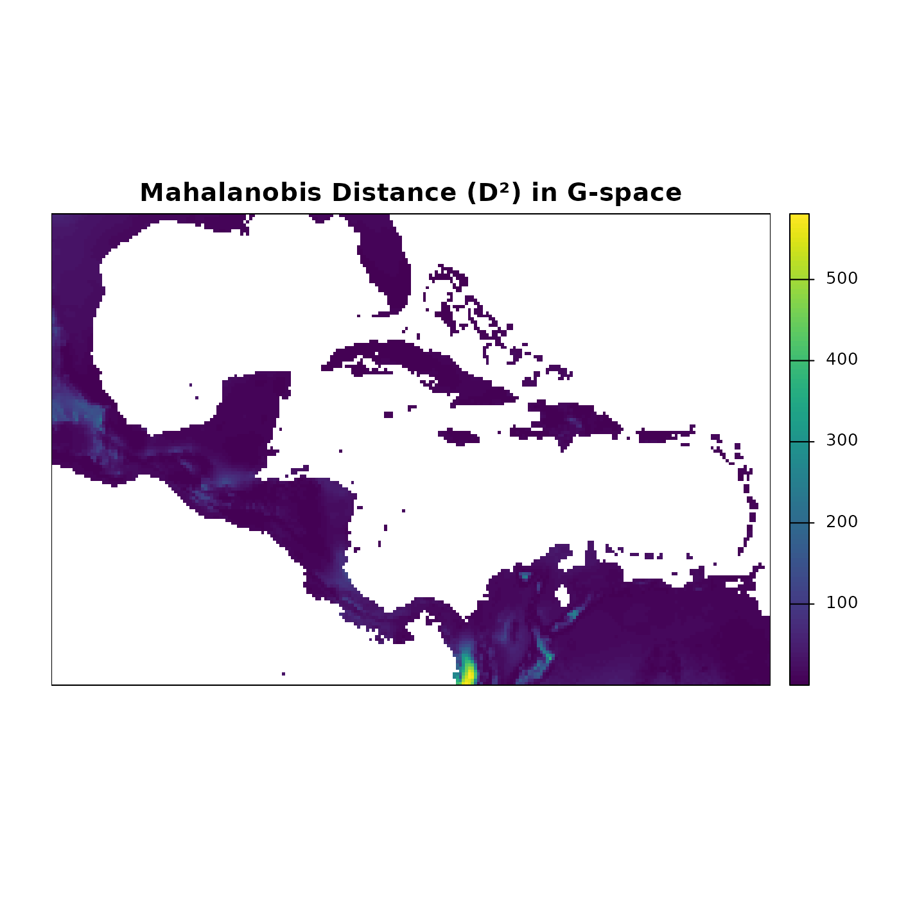
The Mahalanobis distance map highlights regions where environmental conditions closely match the niche centroid (low values, dark blue) versus regions with increasingly different conditions (high values, lighter colors). Latitudinal and coastal gradients in temperature and precipitation produce complex spatial patterns that are not visible in E-space alone.
Suitability map
suit_rast <- predict(ref_ellipse,
newdata = ma_bios[[ref_ellipse$var_names]],
include_mahalanobis = FALSE,
include_suitability = TRUE,
verbose = FALSE)
par(mar = marsr)
terra::plot(suit_rast$suitability,
axes = FALSE, box = TRUE,
main = "Suitability in G-space")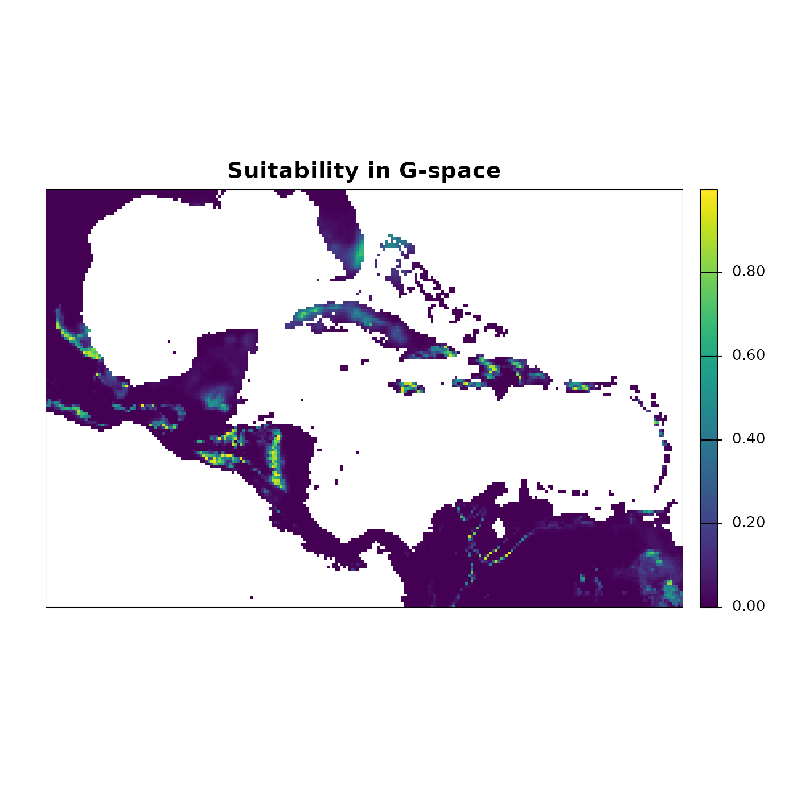
The suitability map shows the continuous gradient of potential habitat quality. Bright yellow-green areas represent the highest suitability, corresponding to conditions closest to the niche centroid. These are not predictions of where the species is present; they are predictions of where environmental conditions are most similar to those used to build the ellipsoid.
Truncated suitability map
trunc_rast <- predict(ref_ellipse,
newdata = ma_bios[[ref_ellipse$var_names]],
include_mahalanobis = FALSE,
include_suitability = FALSE,
mahalanobis_truncated = TRUE,
suitability_truncated = TRUE,
verbose = FALSE)
par(mfrow = c(1, 2), cex = 0.7)
terra::plot(trunc_rast$Mahalanobis_trunc,
axes = FALSE, box = TRUE, mar = marsr,
main = "Mahalanobis Trunc. (D\u00b2)")
terra::plot(trunc_rast$suitability_trunc,
axes = FALSE, box = TRUE, mar = marsr,
main = "Suitability Trunc.")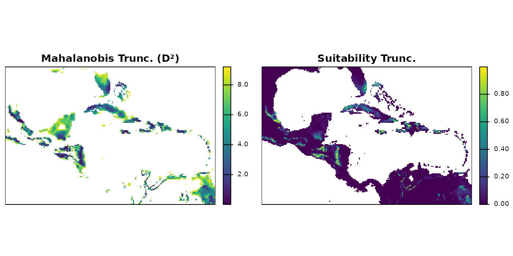
Truncated maps show predictions only within the region of geographic
space where environmental conditions fall inside the ellipsoid. Cells
outside the boundary receive NA (Mahalanobis) or 0
(suitability).
Binary potential distribution map
binary_rast <- (trunc_rast$suitability_trunc > 0) * 1
par(mar = marsr)
terra::plot(binary_rast,
axes = FALSE, box = TRUE,
col = c("#d4d4d4", "#0004d5"),
main = "Potential Distribution (Binary)")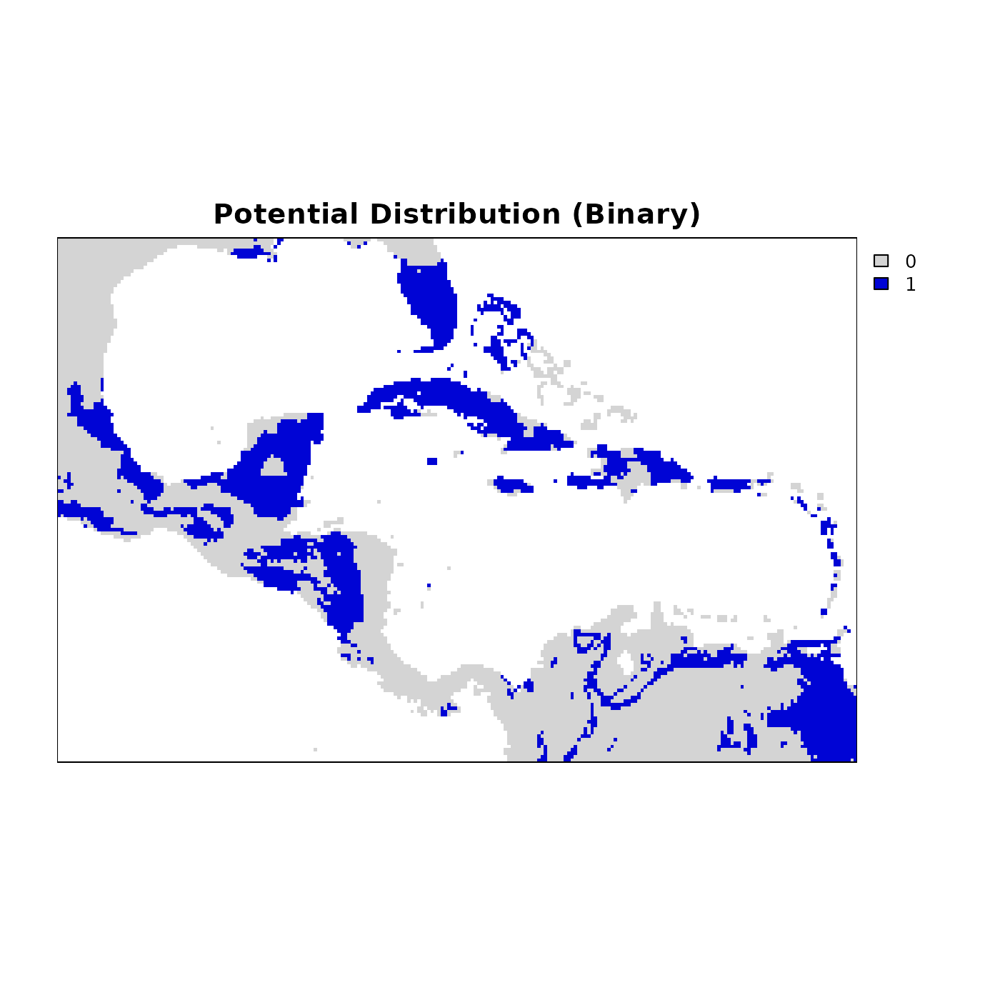
Blue cells represent areas where environmental conditions fall within the niche, and grey cells are outside it. This layer is directly usable for downstream analyses such as species richness mapping, PAM construction, and comparisons with observed occurrence data.
Three-dimensional example
The examples above use a two-dimensional ellipsoid defined by bio1
and bio12. nicheR works with any number of dimensions and
both predictions and pairwise visualizations scale accordingly. Here we
build a three-dimensional ellipsoid from known ranges for bio1 (Mean
Annual Temperature), bio12 (Annual Precipitation), and bio15
(Precipitation Seasonality), and predict suitability over the
background.
range_3d <- data.frame(bio_1 = c(27, 35),
bio_12 = c(1000, 1500),
bio_15 = c(60, 75))
ellipse_3d <- build_ellipsoid(range = range_3d)
#> Starting: building ellipsoidal niche from ranges...
#> Step: computing covariance matrix...
#> Step: computing additional ellipsoidal niche metrics...
#> Done: created ellipsoidal niche.
print(ellipse_3d)
#> nicheR Ellipsoid Object
#> -----------------------
#> Dimensions: 3D
#> Chi-square cutoff: 11.345
#> Centroid (mu): 31, 1250, 67.5
#>
#> Covariance matrix:
#> bio_1 bio_12 bio_15
#> bio_1 1.778 0.000 0.00
#> bio_12 0.000 6944.444 0.00
#> bio_15 0.000 0.000 6.25
#>
#> Ellipsoid semi-axis lengths:
#> 280.685, 8.421, 4.491
#>
#> Ellipsoid axis endpoints:
#> Axis 1:
#> bio_1 bio_12 bio_15
#> vertex_a 31 969.315 67.5
#> vertex_b 31 1530.685 67.5
#>
#> Axis 2:
#> bio_1 bio_12 bio_15
#> vertex_a 31 1250 59.079
#> vertex_b 31 1250 75.921
#>
#> Axis 3:
#> bio_1 bio_12 bio_15
#> vertex_a 26.509 1250 67.5
#> vertex_b 35.491 1250 67.5
#>
#> Ellipsoid volume: 44461.61
suit_3d <- predict(ellipse_3d,
newdata = back_data[, ellipse_3d$var_names],
include_mahalanobis = FALSE,
include_suitability = TRUE,
suitability_truncated = TRUE,
verbose = FALSE)
colnames(suit_3d)
#> [1] "bio_1" "bio_12" "bio_15"
#> [4] "suitability" "suitability_trunc"
head(suit_3d)
#> bio_1 bio_12 bio_15 suitability suitability_trunc
#> 1 18.16097 680 39.75968 9.333979e-58 0
#> 2 18.06556 703 38.44158 7.446140e-60 0
#> 3 17.95946 725 37.43598 1.611035e-61 0
#> 4 18.01018 734 36.24147 1.307242e-63 0
#> 5 18.14458 748 34.95365 1.353496e-65 0
#> 6 18.36623 771 33.73626 5.276799e-67 0With a three-dimensional ellipsoid there are three pairwise
projections: bio1 vs. bio12, bio1 vs. bio15, and bio12 vs. bio15. The
plot_ellipsoid_pairs() function arranges these
automatically in a multi-panel layout, with axis limits shared globally
across all panels so the relative spread of the ellipsoid in each
dimension is directly comparable.
par(cex = 0.7)
plot_ellipsoid_pairs(ellipse_3d,
prediction = suit_3d,
col_layer = "suitability_trunc",
col_bg = "#d4d4d4",
col_ell = "#e10000",
lwd = 2, pch = 16, cex_bg = 0.3)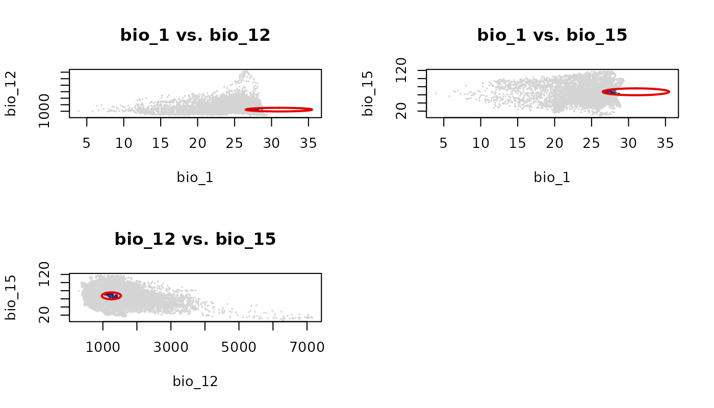
Each panel shows the ellipsoid projected onto a different pair of environmental axes. The empty cell in the 2x2 grid is a consequence of having three pairs and a layout that rounds up to four cells.
par(original_par)Save and import
Prediction outputs are standard R objects and can be saved using
standard functions. For nicheR_ellipsoid objects, use the
save_nicheR and read_nicheR functions.
temp_ellipse <- file.path(tempdir(), "ref_ellipse.rds")
save_nicheR(ref_ellipse, file = temp_ellipse)
ref_ellipse_imported <- read_nicheR(temp_ellipse)
temp_df <- file.path(tempdir(), "predictions_df.csv")
temp_rast <- file.path(tempdir(), "predictions_rast.tif")
write.csv(pred_df, file = temp_df, row.names = FALSE)
terra::writeRaster(pred_rast, filename = temp_rast)
pred_df_imported <- read.csv(temp_df)
pred_rast_imported <- terra::rast(temp_rast)